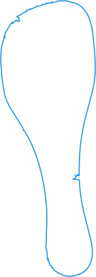
Hidden in the kitchen. This object was swallowed by the flat. It was such a coincidence that I found it. No one uses it; the emotional attachment to this object is tied to the flat itself. The memory is not given by a person, but dissolves on the tacky surface.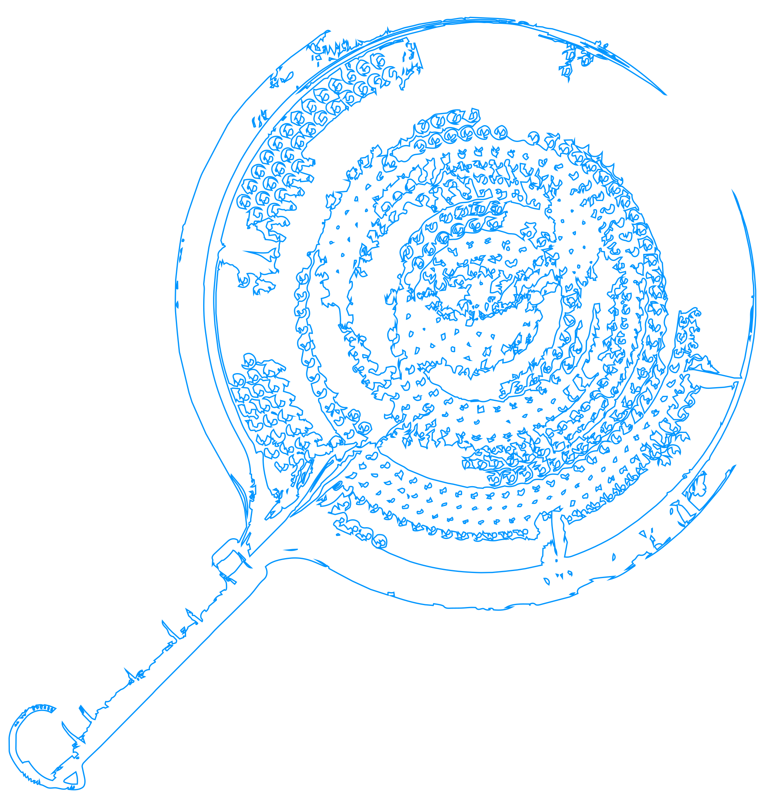
was lying on the window sill. It was resting there, chilling and breathing softly, almost untouched, belonging to the person who no longer lives here. I am thinking whether she forgot this very hard-to-identify object that looks like a bat for spageti.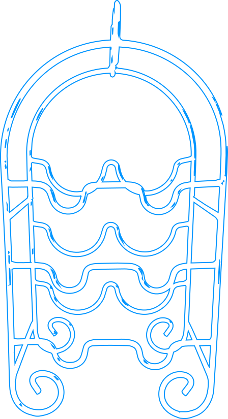
Cold, tarnished, almost rusty surface. A holder for wine, but you probably haven’t seen a bottle for a while. Another object forgotten by someone who used to live here before. Unattached.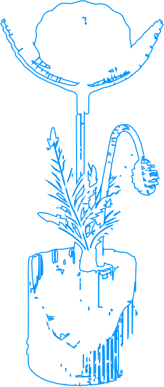
but this rose has never been alive. Is it a trophy, or was it a puzzle that was a pleasure to put together? A beautiful creation, so bright, sharp, and made of cardboard. It does not follow the sun; it stands upright.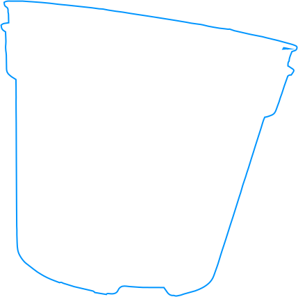
I didn’t realize it was actually in the kitchen. Surrounded by things and it was kinda part of the candle holder. it looked so cenected, as a one object. it us obviously unused, i think it was brought here with the intention to plant the flowers, but it lookes like it was planted to old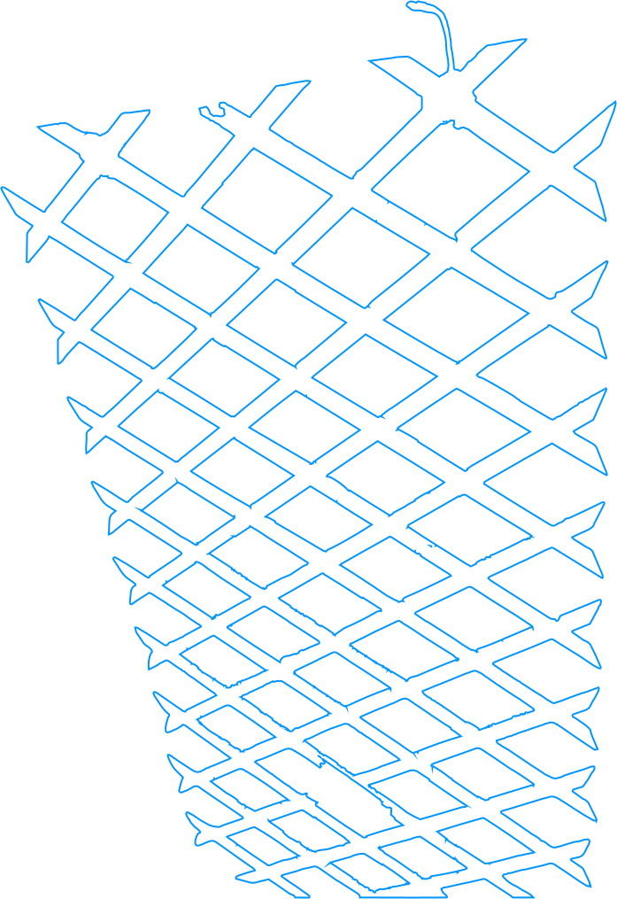
which is holding plants, suppports them but now? Why are you here? You are just looking at me and you suspect all do something with you.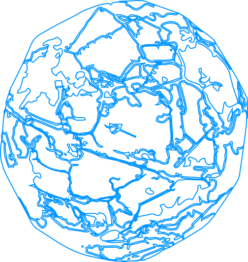
who do you belong to? At first glance, there is only you. Your sticky surface, covered with dust, you are so small and made from plastic. You rolled down under the table.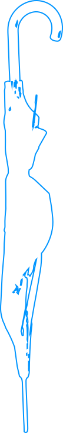
where are you hanging, and when were you last used? Metal wires stick out of you. You were not swallowed by the flat; you have become a sculpture lost in time.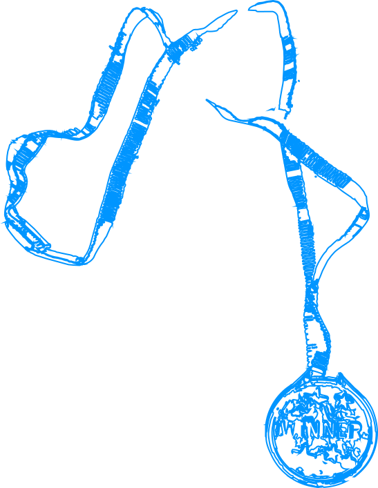
a gold medal made of plastic. The light reflects off its surface, almost reflecting the importance of the object. Such an important day. Do you remember? Of course you do—the smell and how much you laughed. It will always stay in your mind and remain attached to this object.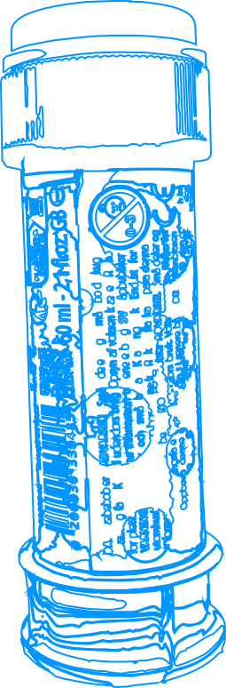
Even though dust sticks to you, you mean so much, though I cannot understand it. But what specific memory do you hold? Standing on the table, you will never be thrown out.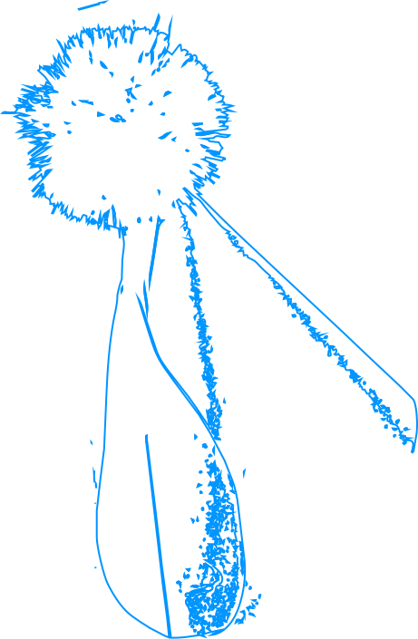
so many emotionally charged objects. So glad to have you here. The shine of the birthday hat reminds us of the amazing night when they were drinking and laughing. It is very important, in the rush of everyday life, to remind the person from this flat how much she enjoyed it.